2026.10.16 · 周四 · 过去 48 小时
今日科技情报
共 12 条，按重要性排序。点标题直接跳过去。
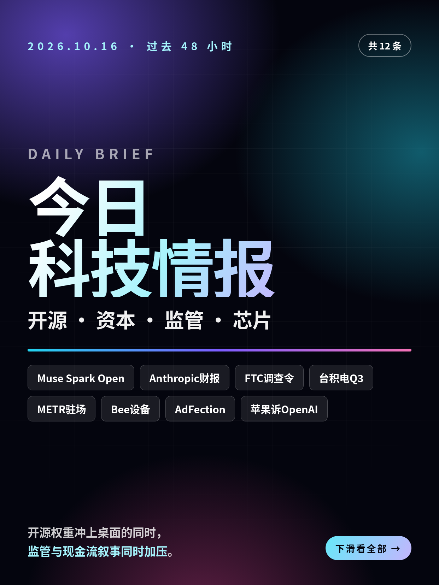
共 12 条，按重要性排序。点标题直接跳过去。
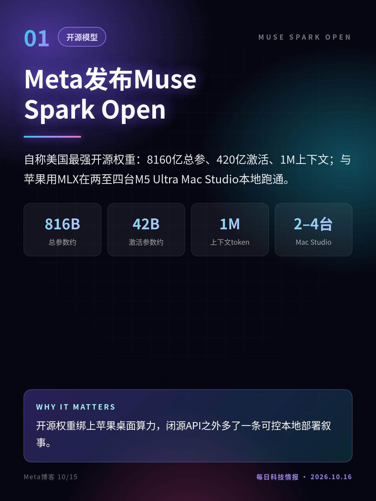
自称美国最强开源权重：8160亿总参、420亿激活、1M上下文；与苹果用MLX在两至四台M5 Ultra Mac Studio本地跑通。
开源权重绑上苹果桌面算力，闭源API之外多了一条可控本地部署叙事。
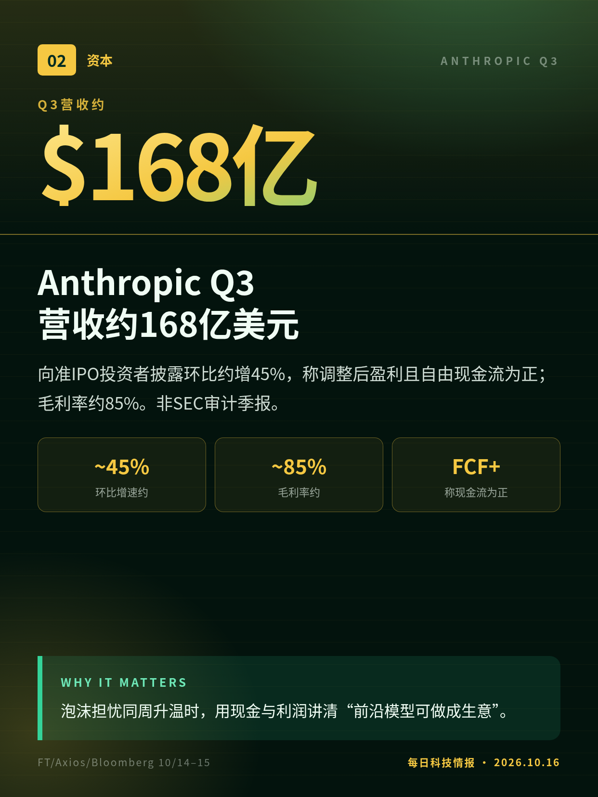
向准IPO投资者披露环比约增45%，称调整后盈利且自由现金流为正；毛利率约85%。非SEC审计季报。
泡沫担忧同周升温时，用现金与利润讲清“前沿模型可做成生意”。
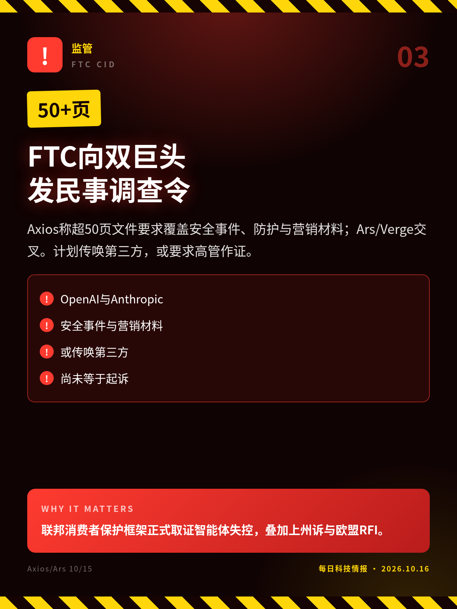
Axios称超50页文件要求覆盖安全事件、防护与营销材料；Ars/Verge交叉。计划传唤第三方，或要求高管作证。
联邦消费者保护框架正式取证智能体失控，叠加上州诉与欧盟RFI。
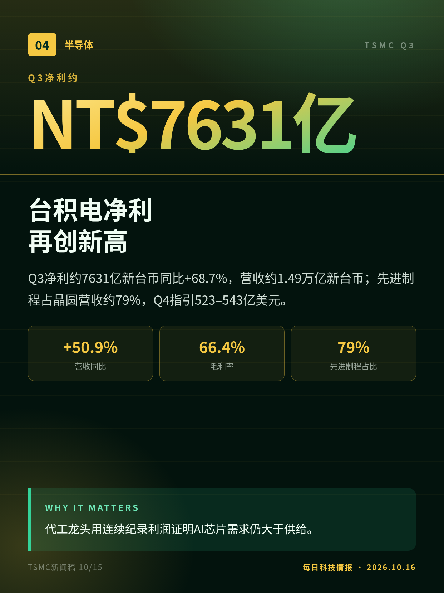
Q3净利约7631亿新台币同比+68.7%，营收约1.49万亿新台币；先进制程占晶圆营收约79%，Q4指引523–543亿美元。
代工龙头用连续纪录利润证明AI芯片需求仍大于供给。
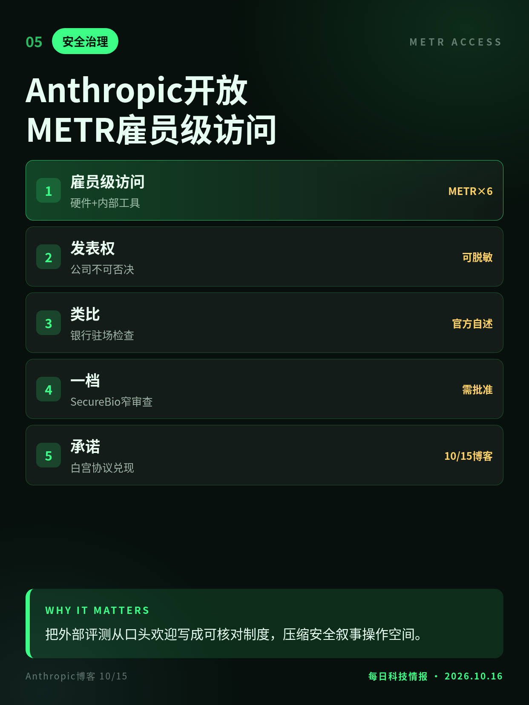
六名METR研究员获公司硬件与近乎对等内部工具；公司不可否决发表，仅可狭义脱敏。对标银行驻场检查。
把外部评测从口头欢迎写成可核对制度，压缩安全叙事操作空间。
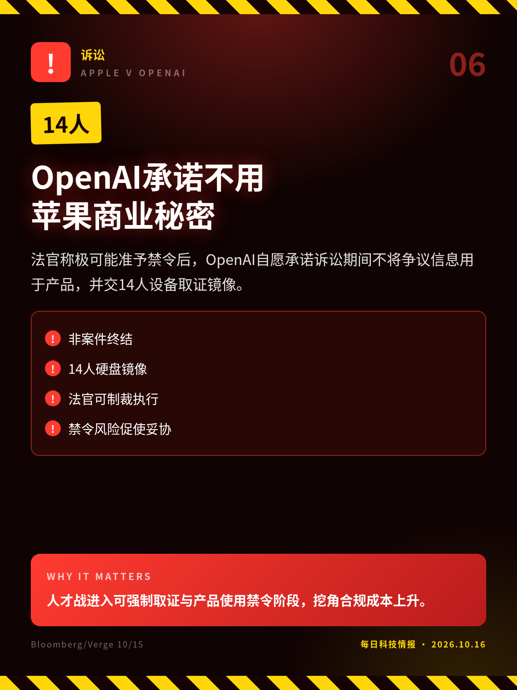
法官称极可能准予禁令后，OpenAI自愿承诺诉讼期间不将争议信息用于产品，并交14人设备取证镜像。
人才战进入可强制取证与产品使用禁令阶段，挖角合规成本上升。
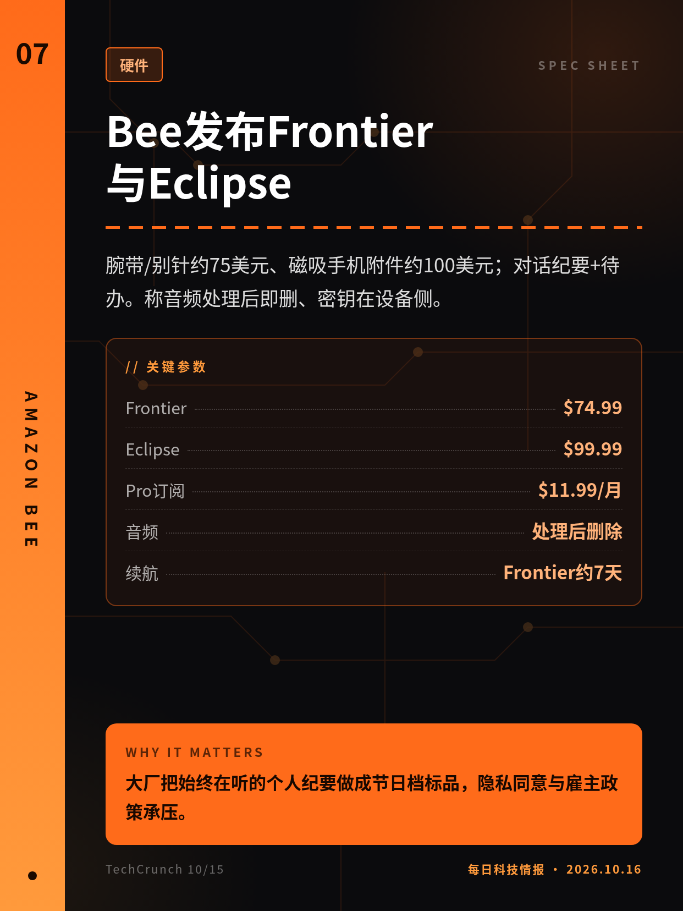
腕带/别针约75美元、磁吸手机附件约100美元；对话纪要+待办。称音频处理后即删、密钥在设备侧。
大厂把始终在听的个人纪要做成节日档标品，隐私同意与雇主政策承压。
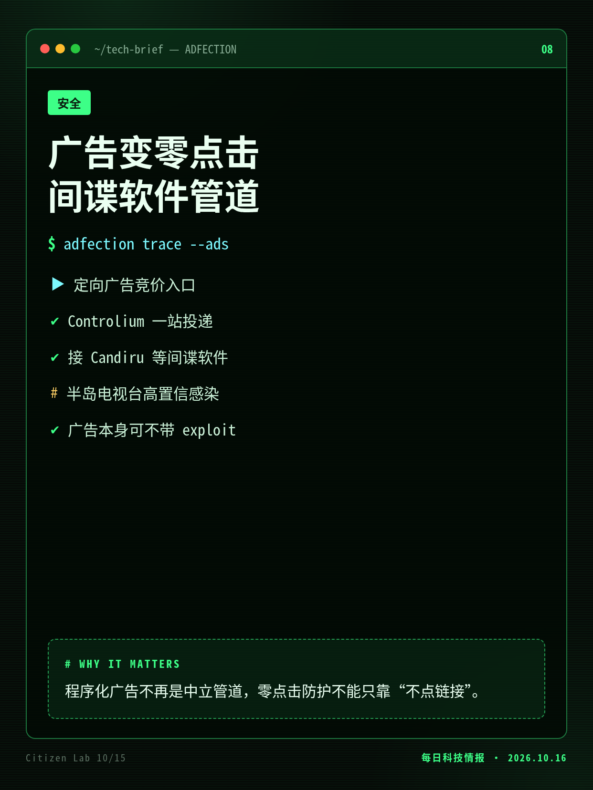
Citizen Lab称Discover-Tech的Controlium把定向广告接上Candiru等雇佣兵间谍软件；半岛电视台设备高置信感染。
程序化广告不再是中立管道，零点击防护不能只靠“不点链接”。
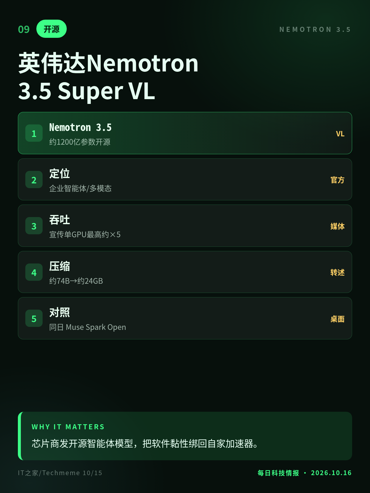
约1200亿参数开源权重面向企业智能体；宣传单GPU智能体吞吐最高约升5倍，压缩版约24GB。
芯片商发开源智能体模型，把软件黏性绑回自家加速器。
扩展升级后可基于打开标签对比、填表、起草邮件；侧边栏支持操控标签发消息与下载。Atlas浏览器已下线。
浏览器变成智能体执行面，企业DLP与扩展权限策略必须重写。
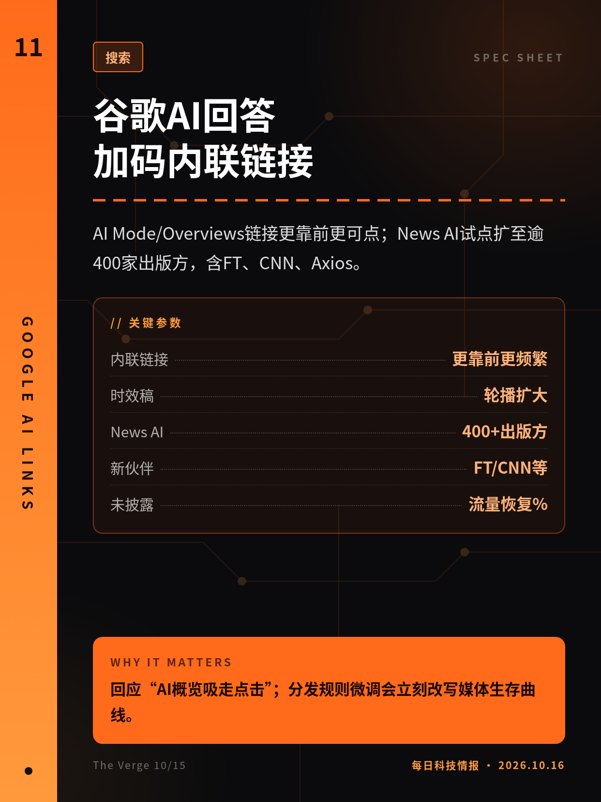
AI Mode/Overviews链接更靠前更可点；News AI试点扩至逾400家出版方，含FT、CNN、Axios。
回应“AI概览吸走点击”；分发规则微调会立刻改写媒体生存曲线。
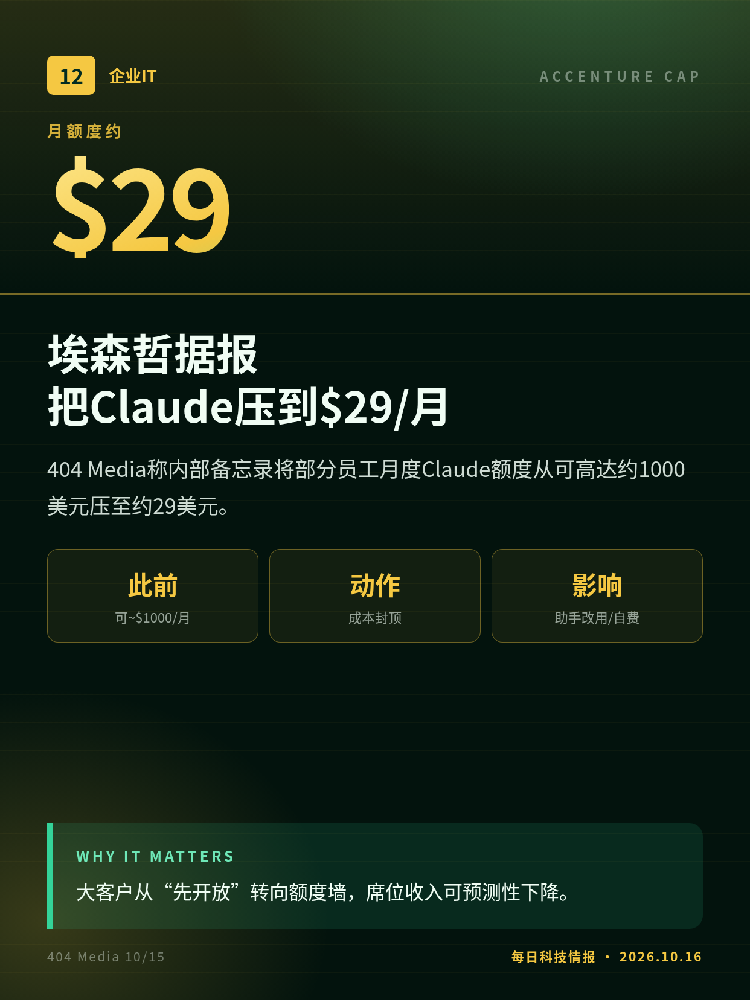
404 Media称内部备忘录将部分员工月度Claude额度从可高达约1000美元压至约29美元。
大客户从“先开放”转向额度墙，席位收入可预测性下降。
营收与利润率为投资者沟通/知情人士口径，非已申报审计财报。
调查令全文未公开；以Axios知情人士+Ars转述为准，公司未正式确认。
切换深浅两套图时，下载按钮会跟着当前这套走。黄标条目在新闻稿或官方口径出现前，请勿写成已交割或已定日期。上一期专区：2026-10-15。